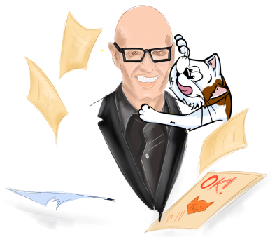
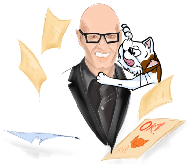

КОШАЧИЙ СЛЕД В ИСТОРИИ
СПОЙЛЕР
Эти истории могли однажды произойти в домах великих учёных, поэтов и художников. Ведь все они были ещё и великими почитателями котов!
 


Коты, живущие возле человека, всегда делали его жизнь уютнее, мягче
и веселее. Они сопровождали великих мореплавателей в море, охраняли рукописи и картины от мышей, были рядом даже в самых
сложных ситуациях.

Задумывались ли вы когда-нибудь о том, что роль кошекв истории человечества намного важнее, чем просто домашний питомец?
А что, если бы коты оставили свой след во многих областях деятельности человека,
в том числе внеся свою лепту в великие открытия?
Непослушная кошка и закон всемирного тяготения
А было ли яблоко?
В 60-х годах XVII века молодой, но уже довольно известныйанглийский ученый Исаак Ньютон неспешно работал в родовой усадьбе Вулсторп. День выдался настолько погожий, что ученый решил обустроить себе рабочее место в тени яблони в саду. Его пушистый кот тоже с радостью вышел поиграть на свежем воздухе.
Однако хозяин склонился над уравнениями и совсем не обращалвнимания на любимца.


Принцип плавучести и закон Архимеда
Если бы кошки умели плавать


Средневековый кот
и круглая, как клубок, Земля
Наша планета бегает за Солнцем, как кот за клубком


Астрономический кот
и бесконечное пространство
Насколько широко может разлечься кот?